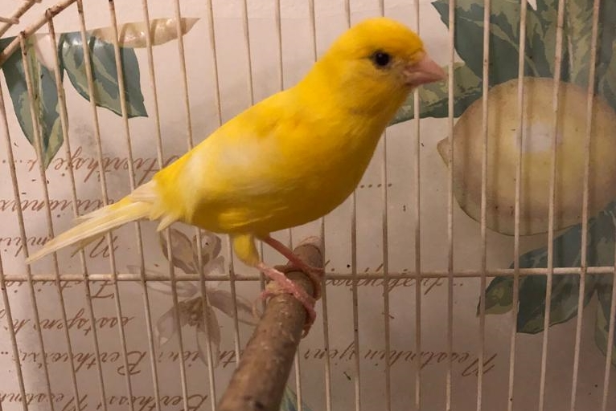

UNA SPOLVERATA DI SPECIE

Canarino Domestico
Il canarino domestico, è un popolare uccello da gabbia, forma addomesticata del canarino atlantico

Canarino Atlantico
Il canarino atlantico o selvatico, è un uccello passeiforme della famiglia dei Fringillidi.
Allevata da tempo per il bel canto, il colore vivace e l'indole allegra, la specie è stata addomesticata da alcune centinaia di anni, e la sua forma domestica, il canarino domestico, è ancora un animale da compagnia molto diffuso ed apprezzato.

Canarino Fiorino
Il canarino fiorino è nato per scherzo a Firenze, per opera di due allevatori, partendo da meticci di canarini arricciati ed altre razze.
Sono oggi tra i più diffusi canarini arricciati presenti alle mostre Italiane, se ha conosciuto una così rapida diffusione, lo deve evidentemente al fatto di essere gradito, rustico, e facilmente riproducibile.

Canarino Gloster
Il Gloster è tra i più piccoli canarini esistenti, con una taglia intorno agli 11-11,5 centimetri che non dovrebbe mai superare i 12. Piccolo e vivace, questo bel canarino si è ottenuto incrociando esemplari di razza Crested con la Border e l’Harzer Roller, di cui conserva una buona melodia del canto che lo fa apprezzare fra gli amanti dei canarini.

Plainhead australiano
Il Plainhead australiano è una razza di canarino domestico che è stata creata per scopi di spettacolo. La varietà è stata sviluppata attraverso l'allevamento selettivo e rimane l'unica razza di canarino creata in Australia.

Canarino Lucertola
Il canarino lucertola è ritenuto una delle razze più antiche, hanno rischiato l'estinzione all'inizio del 1900 a causa delle devastazioni dovute dalle guerre mondiali.
Il suo nome è dovuto dal pattern sulle sue piume